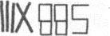

23. BÖLÜM
Başka bir dövme.
Peter’ın açık avcunun yanında çömelen Langdon, bükülü duran cansız parmakların altında saklı yedi küçük sembolü inceledi.

Şaşıran Langdon, “Rakama benziyorlar,” dedi. “Ama ben ne olduklarını çıkaramadım.”
Anderson, “Baştaki Romen rakamı,” dedi.
Langdon, “Aslında ben öyle olduğunu sanmıyorum,” diye düzeltti. “I-I-I-X diye bir Romen rakamı yok. Doğrusunun V-I-I olması gerekirdi.”
Sato, “Peki diğerleri?” diye sordu.
“Emin değilim. Arap rakamlarıyla sekiz-sekiz-beş yazılmış gibi görünüyor.”
Anderson, “Arap mı?” diye sordu. “Normal rakamlara benziyorlar.”
“Bizim normal rakamlarımız Arap rakamlarıdır.” Langdon öğrencilerine bu konuyu açıklamaya öylesine alışmıştı ki, eski Ortadoğu kültürlerinin bilimsel buluşlarıyla ilgili bir ders hazırlamıştı. Bunlardan biri de ‘konumsal gösterim’ ve sıfır sayısının icadıyla Arap rakamlarının Romen rakamlarının önüne geçmesi ve günümüzde kullanılan numaralandırma sistemini oluşturmasıydı. Tabii Langdon bu dersi her zaman, Arap kültürünün insanlığa alkol diye bilinen “al-kuhl” -Harvard’lı birinci sınıfların en sevdiği içecek- kelimesini armağan ettiğini hatırlatarak bitirirdi.
Langdon ne yapacağını bilemez halde dövmeyi dikkatle inceledi. “Sekiz-sekiz-beş konusunda bile emin olamıyorum. Bu düz hatlı yazı şekli alışılmadık geliyor. Bunlar rakam olmayabilirler.”
Sato. “Peki o zaman neler?” diye sordu.
“Emin değilim. Bu dövme nedense... Runik görünüyor.”
Sato, “Yani?” dedi.
“Runik alfabe genellikle taş üzerine yazılır ve sadece düz çizgilerden oluşurdu, çünkü yuvarlak harfleri yontmak çok zordu. Harflerine Run denir.” Sato, “Peki eğer bunlar Run ise, anlamı nedir?” diye sordu.
Langdon başını iki yana salladı. Uzmanlığı sadece üçüncü yüzyıldaki Töton sistemi -Futhark- olan en temel Run alfabesine yetiyordu ama bu Futhark değildi. “Dürüst olmak gerekirse bunların Run olduklarından da emin değilim. Bir uzmana sormak gerekir. Düzinelerce farklı biçimi vardır; örneğin Halsinge, Manx, noktalı Stungnar...”
“Peter Solomon bir mason, öyle değil mi?”
Langdon afalladı. “Evet, ama bununla ne ilgisi var?” Şimdi ayağa kalkmış, ufak tefek kadının tepesinden bakıyordu.
“Siz söyleyin. Runik alfabenin taşa yontulduğunu söylediniz. Bildiğim kadarıyla ilk farmasonlar taş ustalarıydı. Bunu söylüyorum, çünkü ofisimden Gizemler Eli’yle Peter Solomon arasında bir bağlantı bulmalarını istediğimde karşılarına tek bir sonuç çıktı.” Öğrendiği şeyin önemini vurgulamak istercesine durdu. “Masonlar.”
İçini çeken Langdon, öğrencilerine sürekli yinelediği şeyi Sato’ya söylememek için kendini zor tuttu: “Arama’’ kelimesinin eş anlamı “Google” değildir. Dünya çapında anahtar kelime aramalarının yapıldığı şu günlerde, her şeyin her şeyle bağlantısı var gibiydi. Dünya her geçen gün biraz daha yoğunlaşan, dolaşık bir bilgi ağına dönmüştü.
Langdon sabırlı bir sesle konuştu. “Ekibinizin araştırmalarında masonların çıkmasına şaşırmadım. Masonluk, Peter Solomon’la herhangi bir ezoterik konu arasındaki en belirgin bağ.”
Sato, “Evet,” dedi. “İşte bu yüzden ben de bu akşam masonlardan bahsetmemenize şaşırdım. Her şeyden önemlisi, aydınlanmış birkaç kişi tarafından korunan gizli bilgelikten söz ediyorsunuz. Bu kulağa oldukça masonik geliyor, öyle değil mi?”
“Öyle... ama aynı zamanda Gül Haçlılara, Kabalistlere, Alumbrado’lara ve diğer ezoterik gruplara da uyuyor.”
“Ama Peter Solomon bir mason, hem de çok güçlü bir mason. Sırlardan bahsedeceksek, akla ilk gelmesi gereken şey masonlar. Masonların sırları ne kadar çok sevdiğini herkes bilir.”
Langdon, onun sesindeki güvensizliği sezmiş ve bundan hoşlanmamıştı. “Masonlar hakkında bir şey öğrenmek istiyorsanız, bunu bir masona sormalısınız.”
Sato, “Aslında,” dedi. “Güvenebileceğim birine sormayı tercih ederim.”
Langdon bu yorumu hem cahilce, hem de saldırgan bulmuştu. “Hanımefendi, masonların tüm felsefesi dürüstlük ve güvenilirlik üzerine kurulmuştur. Masonlar tanışabileceğiniz en güvenilir insanlardır.”
“Bence deliller tam aksini düşündürüyor.”
Langdon’ın Sato’ya karşı hissettiği hoşnutsuzluk her geçen saniye biraz daha artıyordu. Masonların mecazi ikonografi ve sembollerden oluşan zengin gelenekleri hakkında yıllarca yazı yazdığından, onların dünyada en yersiz iftiralara uğrayan ve en yanlış anlaşılan örgüt olduklarını biliyordu. Şeytana tapmaktan, tek dünya devleti kurma planlarına kadar pek çok şeyle suçlanan masonların eleştirilere asla cevap vermeme gibi bir tutumları vardı ve bu da onları kolay bir hedef haline getiriyordu.
Sato iğneleyici bir tonla, “Yine de çıkmazdayız Bay Langdon,” dedi. “Ya atladığınız ya da benden sakladığınız bir şey var. Uğraştığımız adam Peter Solomon’ın sizi özellikle seçtiğini söyledi.” Buz gibi bakışlarla Langdon'ı süzdü. “Sanırım bu sohbete CIA merkezinde devam etmemizin zamanı geldi. Belki orada şansımız yaver gider.”
Sato’nun üstü kapalı tehditlerini Langdon pek algılayamadı. Söylediği bir şey aklına takılmıştı. Peter Solomon sizi seçti. Masonlar işin içine girince söyledikleri Langdon’da tuhaf bir etki uyandırmıştı. Peter’ın parmağındaki mason yüzüğüne baktı. Çift başlı Zümrüdüanka kuşu sembolü bulunan aile yadigârı bu yüzük, Peter’ın en değer verdiği eşyalarından biriydi. Mason bilgeliğinin en gizemli ikonuydu. Işıkta pırıldayan altın, beklenmedik bir anıyı canlandırmıştı.
Peter’ı alıkoyan kişinin esrarengiz fısıltısını hatırlayan Langdon, soluğunu yuttu. Henüz kavrayamadınız değil mi? Neden seçildiğinizi?
Hemen ardından, Langdon’ın düşünceleri anlam kazanmaya ve sis bulutu dağılmaya başladı.
Şimdi Langdon’ın burada bulunmasındaki maksat apaçıktı.
On beş kilometre ötede, Suitland Yolu’ndan güneye arabayla ilerleyen Mal’akh, yan taraftaki koltuktan gelen titreşimleri duydu. Bugün etkili bir alet olduğunu kanıtlayan Peter Solomon’ın iPhone’u çalıyordu. Çağrıyı yapan orta yaşlı, uzun siyah saçlı, çekici kadının fotoğrafı ekranda belirdi.
GELEN ARAMA- KATHERINE SOLOMON
Çağrıyı duymazdan gelen Mal’akh gülümsedi. Kader beni yaklaştırıyor.
Bu akşamüstü Katherine Solomon’ı evine tek bir amaç için getirtmişti; kendisine yardımı dokunacak bir bilgiye veya aradığı şeyin yerini bulmasına yarayacak bir aile sırrına sahip olup olmadığını anlamak. Ama açık bir biçimde anlaşılmıştı ki, ağabeyi yıllardır koruduğu şeyden Katherine’e hiç bahsetmemişti.
Buna rağmen Mal’akh ondan başka bir şey öğrenmişti. Bugün ona birkaç saat daha yaşama şansı kazandıran bir şey. Katherine tüm araştırmalarının tek bir yerde, laboratuvarında saklandığını teyit etmişti.
Onu yok etmeliyim.
Katherine’in araştırmaları yeni bir anlayışın kapılarını açacak ve o kapı biraz aralama bile ardından gelenler olacaktı. Her şeyin değişmesi an meselesiydi. Bunun gerçekleşmesine izin veremem. Dünya olduğu gibi kalmalı... cehaletin karanlığında bırakılmalı.
Katherine’in sesli mesaj bıraktığını bildiren iPhone bipledi. Mal’akh mesajı dinledi.
“Peter, yine benim.” Katherine’in sesinden kaygılandığı anlaşılıyordu. “Neredesin? Hâlâ Dr. Abaddon’la yaptığım konuşmayı düşünüyorum... ve çok endişeliyim. Her şey yolunda mı? Lütfen beni ara. Laboratuvardayım.”
Sesli mesaj sona ermişti.
Mal’akh gülümsedi. Katherine, ağabeyi yerine kendisi için endişelenmez. Suitland Yolu’ndan, Silver Hill Yolu’na saptı. Bir kilometre kadar sonra, otoyolun sağ tarafındaki ağaçların arasında, SMSC’nin karanlıktaki siluetini gördü. Tüm tesis, jiletli tellerle çevrelenmişti.
Güvenlikli bir bina, öyle mi? Mal’akh kendi kendine güldü. Bana kapıyı açacak birini tanıyorum.